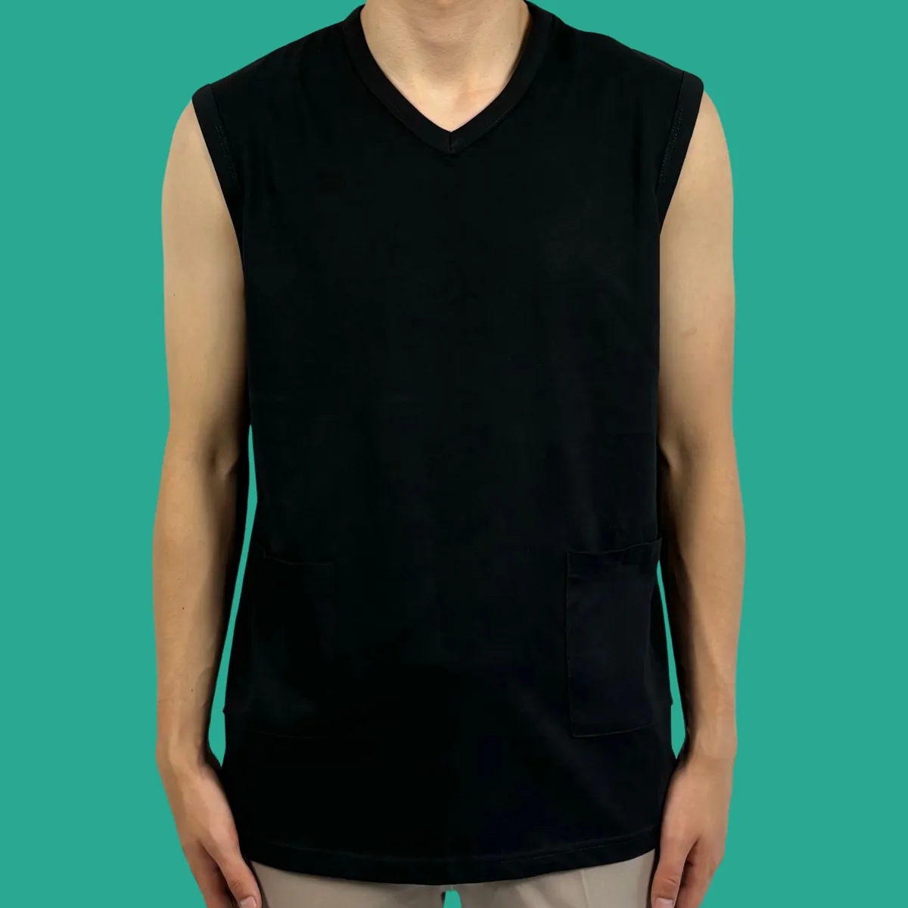
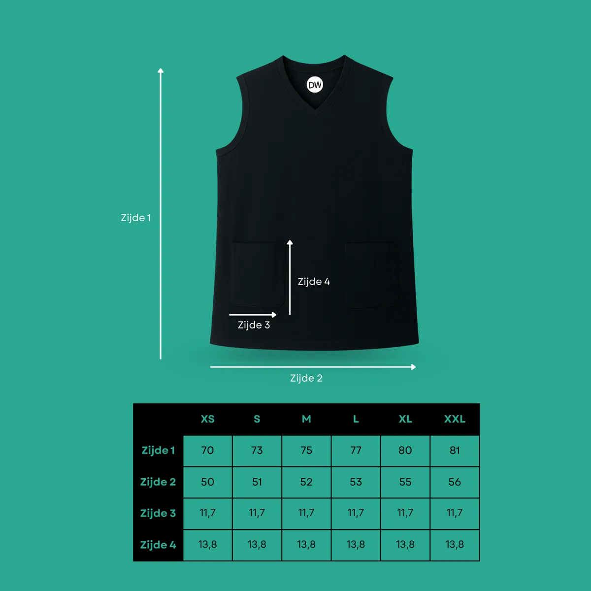

Unterhemd mit V-Ausschnitt und 2 Taschen
Ärmelloses Baumwoll-Unterhemd mit V-Ausschnitt, zwei Pumpentaschen mit Klettverschluss und Schlauchöffnung. Weiß oder Schwarz, XS bis XXL.
XS nur in weiß. XXL nur in schwarz.
- Kostenloser Versand in die Niederlande ab 30 €, nach Belgien ab 75 €
- Lieferung innerhalb von 2-3 Werktagen
- 14 Tage Rückgabe
- Fragen? Antwort innerhalb von 24 Stunden über info@diabeticswear.com
Beschreibung
Für Menschen mit Insulinpumpe ist Komfort im Alltag kein Luxus, sondern eine Notwendigkeit. Dieses Unterhemd bietet eine clevere, stilvolle und praktische Lösung, um deine Pumpe zu tragen.
Zwei integrierte Taschen auf der Vorderseite nehmen deine Insulinpumpe sicher und diskret auf, ob bei der Arbeit, beim Einkaufen oder zu Hause. Zwei unauffällige Öffnungen an der Innenseite führen den Pumpenschlauch ordentlich zum Körper, sodass nichts herunterhängt und alles unter deiner Kleidung verborgen bleibt.
Aus 100 % Baumwolle: weich, robust und den ganzen Tag bequem, auch nachts. Die Taschen schließen mit Klettverschluss, sodass deine Pumpe auch bei viel Bewegung an ihrem Platz bleibt.
Details
| Material | 100% Baumwolle |
|---|---|
| Größen | XS (nur in Weiß) / S / M / L / XL / XXL (nur in Schwarz) |
| Farbe | Weiß / Schwarz |
| Anzahl Taschen | 2 |
| Position der Taschen | Vorne |
| Taschenmaße | 11,7 × 13,8 cm (B × H) |
| Verschluss | Klettverschluss |
| Pflege | Siehe Etikett im Artikel |
Größentabelle
Die Maße sind flach gemessen, in Zentimetern. Die T-Shirts und Unterhemden fallen groß aus: Bestelle im Zweifel eine Größe kleiner.
| Größe (cm) | XS | S | M | L | XL | XXL |
|---|---|---|---|---|---|---|
| Länge (Seite 1) | 70 | 73 | 75 | 77 | 80 | 81 |
| Breite (Seite 2) | 50 | 51 | 52 | 53 | 55 | 56 |
| Taschenbreite (Seite 3) | 11,7 | 11,7 | 11,7 | 11,7 | 11,7 | 11,7 |
| Taschenhöhe (Seite 4) | 13,8 | 13,8 | 13,8 | 13,8 | 13,8 | 13,8 |

Versand & Rückgabe
Lieferung: Wir liefern deine Bestellung in der Regel innerhalb von 2-3 Werktagen.
Niederlande: kostenlos ab 30 €, sonst 4,25 €.
Belgien: kostenlos ab 75 €, sonst 5,25 €.
Rückgabe: innerhalb von 14 Tagen nach Erhalt, unbenutzt und in der Originalverpackung. Die Rücksendekosten trägst du, außer bei defekten oder falsch gelieferten Produkten.
Häufige Fragen zu diesem Produkt
Passt meine Insulinpumpe in die Taschen?
Die zwei Taschen auf der Vorderseite messen 11,7 × 13,8 cm (B × H) und schließen mit Klettverschluss. Sie passen für die meisten gängigen Insulinpumpen. Unsicher? Schick dein Pumpenmodell an info@diabeticswear.com.
Wie verläuft der Infusionsschlauch?
An der Innenseite befinden sich zwei verstärkte Öffnungen. So führst du den Schlauch unter dem Shirt zu deiner Pumpe, ohne dass etwas herunterhängt.
Welche Größe soll ich wählen?
Die T-Shirts und Unterhemden fallen groß aus. Wir empfehlen, eine Größe kleiner als üblich zu bestellen. Sieh dir die Größentabelle auf dieser Seite an.
Aus welchem Material ist es?
100% Baumwolle: weich, atmungsaktiv und für den täglichen Gebrauch geeignet, auch nachts.
Wie hoch sind Versandkosten und Lieferzeit?
Der Versand innerhalb der Niederlande ist ab 30 € kostenlos (sonst 4,25 €), nach Belgien ab 75 € (sonst 5,25 €). Wir liefern in der Regel innerhalb von 2-3 Werktagen.
Kann ich dieses Produkt zurückgeben?
Ja, innerhalb von 14 Tagen nach Erhalt, unbenutzt und in der Originalverpackung. Die Rücksendekosten trägst du, außer bei defekten oder falsch gelieferten Produkten.
Das sagen unsere Kunden
“Die Shirts sind in einem Wort GROSSARTIG!! Ich habe das Shirt privat und bei der Arbeit getragen, wo mir die Pumpe sonst immer im Weg war. Dieses Problem habe ich nicht mehr. Keine Pumpe mehr im Weg beim Ein- und Aussteigen aus dem Auto.”
“Nach 2 Tagen Tragen bin ich begeistert! Das Setzen des Katheters war etwas gewöhnungsbedürftig, aber das wird leichter, je weicher das Shirt wird. Bei der Hausarbeit und beim Joggen blieb meine Pumpe fest und sicher an ihrem Platz. Aus robustem Stoff.”
“Ich bin total glücklich mit diesem T-Shirt! Es ist super bequem und perfekt, um meine Insulinpumpe diskret zu tragen. Eine echte Empfehlung für alle, die täglich eine Insulinpumpe tragen.”
“Ich bin mit dem Produkt zufrieden, aber der Halsausschnitt ist recht hoch und schaut bei mir als Frau über anderer Kleidung heraus. Die Taschen sind geräumig, sodass sich die Pumpe etwas bewegt. Schön, dass es auf beiden Seiten eine Tasche gibt, der Klettverschluss funktioniert gut und der Stoff ist bequem.”
“Der Stoff ist recht dick und daher weniger geeignet, um ihn unter anderer Kleidung zu tragen. Als Bauchschläferin finde ich die Taschen vorne zum Schlafen unpraktisch. Außerdem bleibt der Klettverschluss manchmal an meiner Kleidung hängen.”